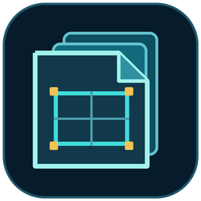

View Tools
Utilidades de ejes, niveles, VV/VG masivo, plantillas de vista y vínculos RVT para Revit.
Por usuario y por aplicación. Suscripciones independientes.
Funciones
Grid Tools
Control de extensión y visibilidad de ejes en vistas 2D y alcance 3D.
Level Tools
Ajustes de niveles por recorte de vista o alcance global.
Mass VG
Selección de vistas y plantillas, modificación de gráficos, colores, filtros y categorías disponibles.
Template Manager
Buscar vistas por nombre y asignar plantillas de forma masiva.
Link Audit
Diagnóstico de vínculos RVT sin abrir ni modificar archivos enlazados.
Anotaciones RVT masivas
Oculta rejillas o todas las categorías de anotación de vínculos RVT en vistas y plantillas seleccionadas.
Información técnica
El lote automático requiere confirmación y protege temporalmente la entrada física del ratón y teclado. ESC o F12 cancela y libera la entrada. No minimices Revit ni cambies de escritorio durante el lote.